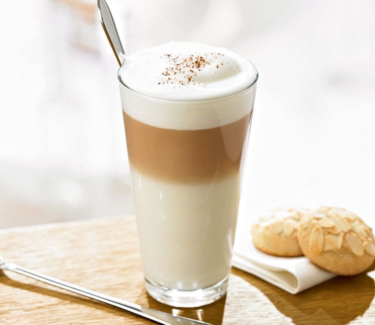
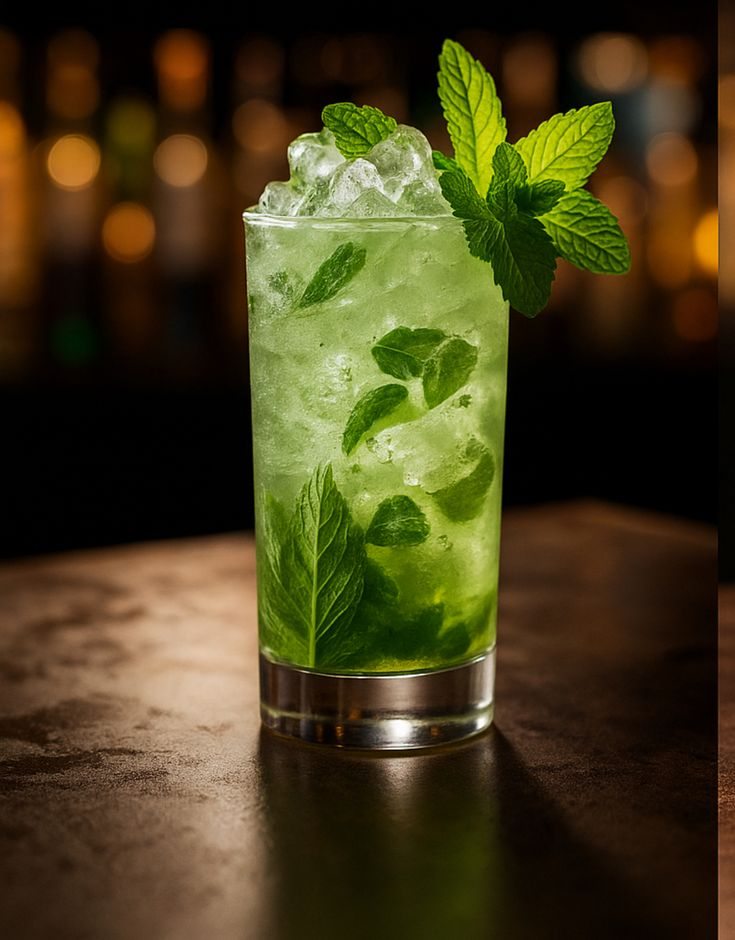
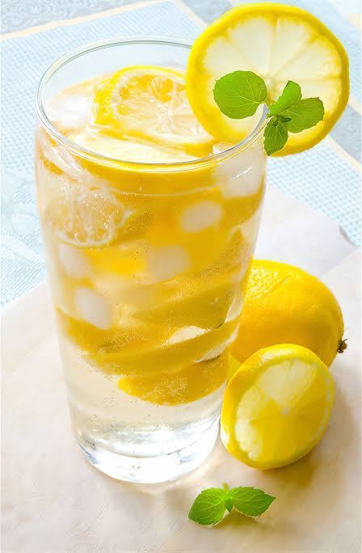
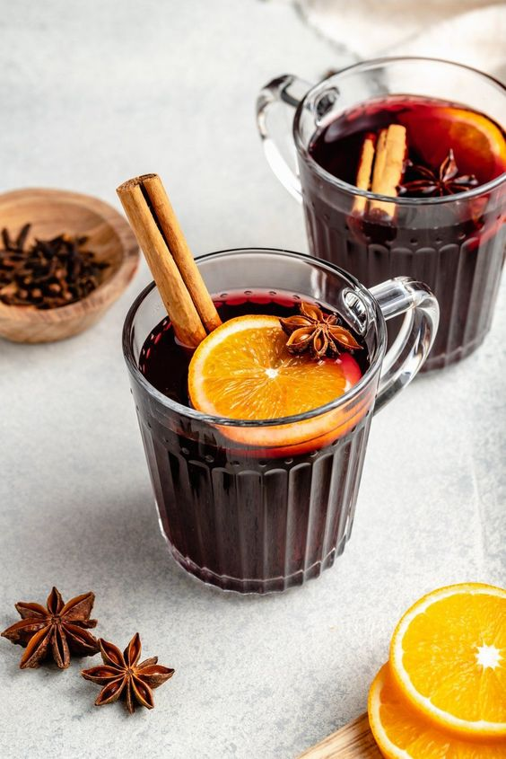

Гарячий
Безалкогольний
Кава Латте
Класичний кавовий напій з великою кількістю молока.

Класичний кавовий напій з великою кількістю молока.

Освіжаючий напій на основі білого рому, м'яти та лайма.

Прохолодний літній напій зі свіжих лимонів та сиропу.

Зігріваючий напій на основі червоного вина зі спеціями та цитрусовими.